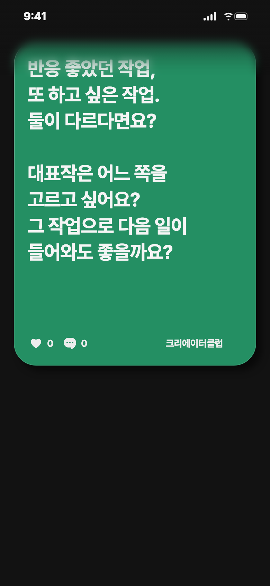
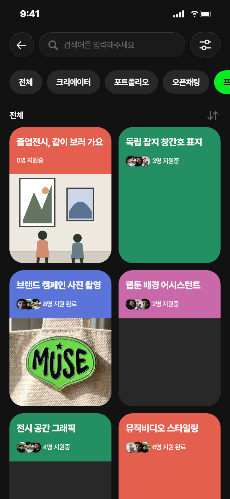
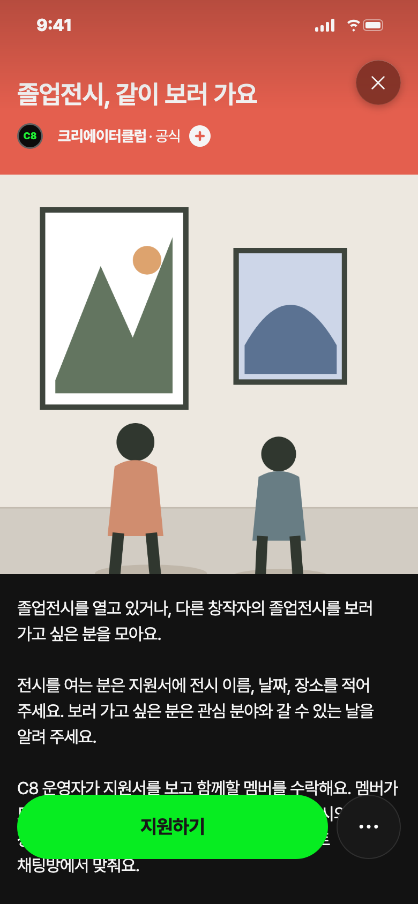
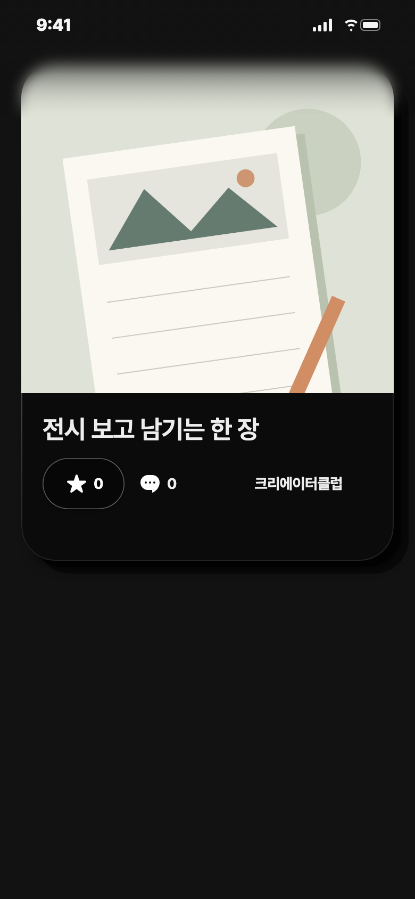
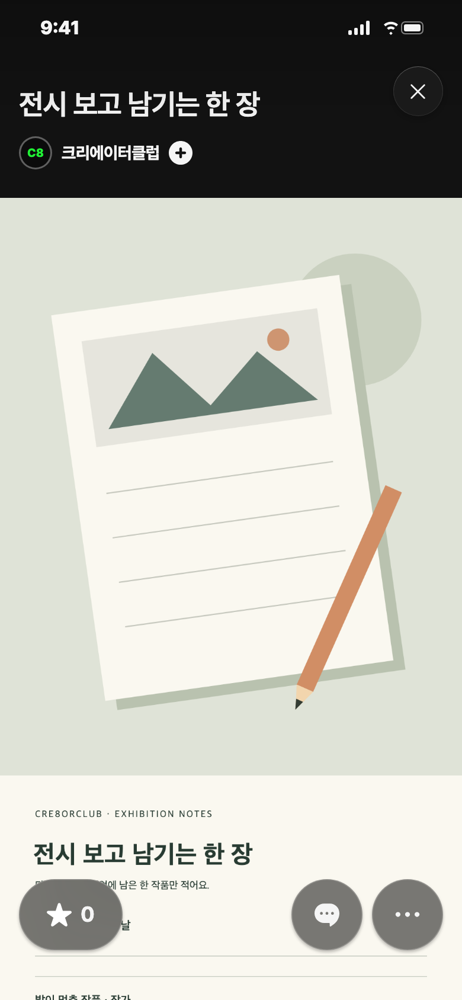
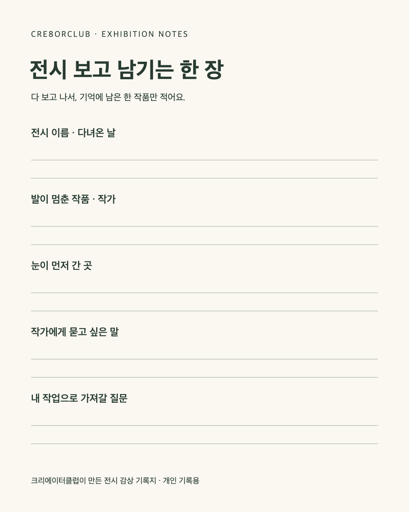

모두 비축 · 출시 후 사용할 문안이에요. 앱 실제 게시와 모집은 하지 않았어요.
C8 앱 게시 시안 · 11/8 다시 쓴 세 안 · 모두 비축 · 26.46.0 출시 후 사용

추천: 영감 후보 · 젠지 ★4
배경: 시안 색은 예시예요. 실제 영감 배경은 랜덤이에요.
보낼 사람: 반응 좋은 작업과 앞으로 할 작업 사이에서 고민하는 창작자 친구
받고 싶은 댓글: 고른 작업과 그 이유. 예시는 지어내지 않았어요.
타입: 생각을 묻는 글. 모집·사용법 설명 없음
반응 좋았던 작업, 또 하고 싶은 작업. 둘이 다르다면요? 대표작은 어느 쪽을 고르고 싶어요? 그 작업으로 다음 일이 들어와도 좋을까요?


기준: 26.46.0 · 지원서 → 리더 수락 → 게시판·일정·프로젝트 채팅방
게시 전 조건: 지원자 수락·게시판·일정을 맡을 C8 운영자와 모집 기간을 먼저 정해요. 날짜는 출시일에 맞춰 본문에 추가해요.
보낼 사람: 졸업전시를 여는 친구와 다른 학교 전시를 보러 가고 싶은 친구
받고 싶은 지원: 전시 이름·날짜·장소 또는 관심 분야·가능한 날
추천 별점: 젠지 ★4 · 운영 담당·기간 확정 전에는 비축
졸업전시, 같이 보러 가요
졸업전시를 열고 있거나, 다른 창작자의 졸업전시를 보러 가고 싶은 분을 모아요. 전시를 여는 분은 지원서에 전시 이름, 날짜, 장소를 적어 주세요. 보러 가고 싶은 분은 관심 분야와 갈 수 있는 날을 알려 주세요. C8 운영자가 지원서를 보고 함께할 멤버를 수락해요. 멤버가 모이면 게시판에 전시 소식을 올리고, 같이 갈 전시의 날짜와 장소를 일정에 등록해요. 함께 갈 약속은 프로젝트 채팅방에서 맞춰요. 자기 전시를 소개해도 좋고, 보고 싶은 전시를 골라도 좋아요. 전시장에서 나눈 이야기는 다녀온 뒤 게시판에 남겨요. 다음에 보러 갈 사람이 먼저 읽을 수 있게요.
졸업전시를 열고 있거나, 다른 창작자의 졸업전시를 보러 가고 싶은 분을 모아요. 전시를 여는 분은 지원서에 전시 이름, 날짜, 장소를 적어 주세요. 보러 가고 싶은 분은 관심 분야와 갈 수 있는 날을 알려 주세요. C8 운영자가 지원서를 보고 함께할 멤버를 수락해요. 멤버가 모이면 게시판에 전시 소식을 올리고, 같이 갈 전시의 날짜와 장소를 일정에 등록해요. 함께 갈 약속은 프로젝트 채팅방에서 맞춰요. 자기 전시를 소개해도 좋고, 보고 싶은 전시를 골라도 좋아요. 전시장에서 나눈 이야기는 다녀온 뒤 게시판에 남겨요. 다음에 보러 갈 사람이 먼저 읽을 수 있게요.


결과물: C8이 직접 만든 전시 감상 기록지 · 표지와 기록지 원본 두 장
보낼 사람: 전시를 본 뒤 자기 작업 아이디어도 남기고 싶은 친구
받고 싶은 댓글: 부탁하지 않아요. 기록지는 개인 메모로 바로 쓸 수 있어요.
추천 별점: 젠지 ★4 · 휴대폰에서 긴 필기 공간은 작게 보여 원본도 함께 제공
전시 보고 남기는 한 장
전시를 보고 나오면 작품 제목보다 색 하나가 먼저 떠오를 때가 있어요. 그 기억을 적어 둘 수 있게 크리에이터클럽이 전시 감상 기록지를 만들었어요. 두 번째 사진이 기록지 원본이에요. 사진을 저장해 메모를 덧쓰거나, 출력해서 가져갈 수 있어요. 전시 전체를 정리할 필요는 없어요. 발이 멈췄던 작품 하나를 떠올리며 적으면 한 장이 채워져요.
포트폴리오에 올릴 사진 두 장
첫 장은 글자 없는 표지, 두 번째 장은 아래 기록지 원본이에요.
표지 원본 받기 · 기록지 원본 받기
프로젝트는 C8 운영 담당자와 모집 기간을 정한 뒤에만 게시해요. 영감의 배경색은 랜덤이며 그림 색은 예시예요. 화면은 디자인 원본을 사용한 시안이며 출시 앱 검증을 뜻하지 않아요.
카드 시안은 콘텐츠만 보여 줘요. 앱 메뉴 전체와 실제 게시 상태를 재현한 화면은 아니에요.